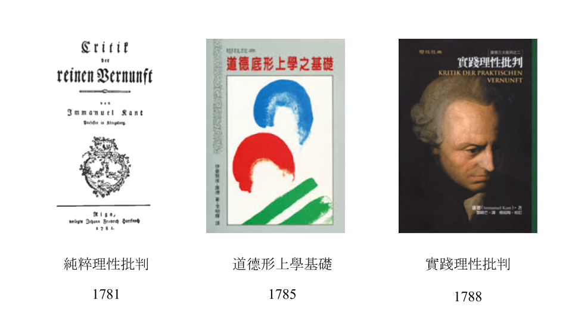

法政哲學報告
第四組
物治 丁有鄰 電機 林易甫 電機 張維倫
法律 溫梓懿 環工 邱鈺程 機械 翁瑞陽
康德簡介
17,18世紀啟蒙運動
● 相信理性
● 批判傳統
康德
● 人具有理性能力，因此有尊嚴
● 人本身是目的

自由與道德
道德形上學基礎
1. 什麼是道德最高原則?
2. 什麼是自由?
康德的思想
● 對於功利主義的批判
● 康德自由論之於自由至上主義
義務vs喜好:
● 何謂義務: 善意志，出於對的理由而去做對的事
● 何謂喜好: 為了滿足需求、欲望、喜好、利己
自主vs他律
● 何謂他律: 根據外在的決定因素來行動。
● 何謂自主: 根據我們給自己訂的規定來行動。一般理解的自由就是從心所欲，不受阻礙。
定然律令vs假然律令
● 假然律令：
如果想要得到某個結果，那麼就應該做某件事
● 定然律令：
行動不遵循外在強制的定律，而是遵循自訂的定律
定然律令的二個形式:
普遍法則形式 ： 放諸四海皆然。
可普遍化的測試 ： 你自己採行的準則，和所有理性人都採用的行為一樣。
可普遍化的測試提供了一種檢驗方法，檢視自己是否把自身利益置於他人之上。
定然律令的二個形式:
目的自身形式： 絕對不能把人當成只是手段，而永遠要同時當成是目的。
把人當成“只是”手段： 把人當成滿足個人喜好或達成某個喜好之工具。
把人當成目的： 尊重自己或他人是具有理性、可以實踐道德行為的尊嚴存在者。
判斷方式： 你的行為有沒有把自己或對方當成一個有尊嚴、有價值的「人」看待？
理智領域vs感官領域
● 理智領域：
人為自然動物，行動受制於自然定律和因果定律
所有的選擇都是為了下一個目的。
● 感官領域：
不受感官世界的擺佈，就是自由。
行動不遵循外在強制的定律，而是遵循自訂的定律
對康德道德觀的四個問題
康德的定然律令要求我們尊重每一個人，把人人都當作目的。
這不是有點像「黃金規則」嗎？
對康德道德觀的四個問題
康德似乎認為，履行義務等於自主行動，但符合義務又是遵守定律。
屈從定律與自由怎能相提並論？
對康德道德觀的四個問題
如果自主就是行事符合自訂定律，
要如何保證人人都會選擇相同的道德律？
對康德道德觀的四個問題
康得主張，如果道德不僅僅是識時務的計算，其形式必然是定然定律。
但是如何確定，道德可以獨立於權謀利益之外？
結論
● 若想成為一個道德的人，是否道德？
● 道德論和功利主義哪個才是好的？
● 尊重對方是一個具有理性、可以實踐道德行為的尊嚴存在者。
問題討論
● 是否贊成自殺
● 是否贊成安樂死
● 是否贊成代理孕母
感謝聆聽